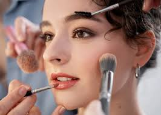
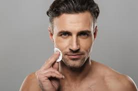

Un poco de Nosotros
Explora un poco de nuestra historia y de nuestra misión
Un poco de Nosotros
Cosbelle es la marca de cosméticos líder en todo el mundo que acerca lo mejor de la belleza del lujo a todos. Desde maquillaje y productos de cuidado de la piel hasta las últimas tecnologías para el cabello y coloración, nuestro espíritu pionero lidera nuestra excelencia científica e innovación constante. Llevamos comprometidos con la seguridad, la eficacia y la calidad desde hace más de 110 años. Como marca que siempre ha abogado y rendido homenaje al empoderamiento femenino, L'Oréal Paris desafía los estereotipos con una visión moderna de la feminidad. Del mismo modo, apoyamos a todas las mujeres en su búsqueda por la realización según sus propias reglas y deseos. Porque todos lo valemos
Nuestra Historia
Hace más de 60 años, María Chávez tuvo una visión pionera y audaz: celebrar y honrar a la mujer latina a través de productos de belleza innovadores y de alta calidad. Su legado sigue vivo en la actualidad, en cada uno de nuestros productos y en la misión de hacer sentir a las mujeres latinas empoderadas y seguras de sí mismas. Evolucionamos hasta llegar a convertirnos en una marca completa de maquillaje, con productos para ojos, rostro, labios y, especialmente, piel, que realcen la belleza de toda Latinoamérica.
Misión
Formular y fabricar productos cosméticos que generen un impacto positivo en el consumidor, ofreciendo soluciones innovadoras y de alta eficacia, trabajando junto a marcas emergentes y consolidadas, para impulsar su crecimiento y reforzar su posicionamiento en un mercado en constante evolución.
Visión

Ofrecer productos exclusivos y de excelente calidad. Convertir nuestra tienda en una experiencia sin igual, que cautive a nuestro clientes y cree con ellos una relación especial al largo plazo, que permita un crecimiento estable que beneficie a todos.